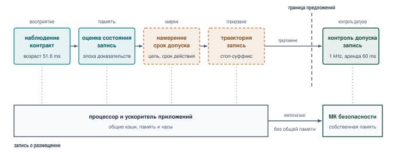

Работа машины
Часть II завершалась оценочной записью, которая ограничивает то, что ученый-предложитель показал, что он может сделать в целевой области оперативного проектирования, и называет мониторы времени выполнения, которые должна предоставить машина. Теперь, когда привод складского мобильного манипулятора движется по проходу, его навигационная камера фиксирует человека, выходящего из-за стойки впереди. Следующее предложение политики фрагментов по-прежнему переносит базу вперед, и путь разрешения должен решить, является ли наблюдение за ним еще свежим и разрешает ли оставшееся расстояние это движение или только остановку. У решения есть крайний срок, и никакое лучшее предложение не поможет, когда машина превысит тормозной запас. Запуск физической машины искусственного интеллекта означает согласование временных рамок обнаружения, планирования и срабатывания с этим физическим сроком. Человеческие цели могут меняться за секунды, а траектории — за десятки миллисекунд, в то время как цикл разрешений в одной реализации выполняется каждую миллисекунду. Требуемые скорости и времена отклика исходят из объекта управления и ее измеренных задержек, а не из названий уровней.
Принцип 1: Предложение не является разрешением
Следствие: Каждый этап выполнения принимает одно решение: может ли это предложение пересечь причинную границу до того, как исчерпается запас. Этапы, предшествующие пути получения разрешения, предоставляют доказательства с учетом их возраста и неопределенности. Путь разрешений выполняется на ресурсах, которые не могут задерживать изученные рабочие нагрузки. Любая гарантия, которую предлагает путь, например барьерный фильтр (Раздел 12.5), действует только до тех пор, пока сохраняется его модель, оценка состояния, полномочия исполнительного механизма и крайний срок.
В части III разрабатывается среда выполнения, которая использует оцененные возможности предлагающего, не предполагая, что они верны в каждом случае, и которая предоставляет среде выполнения мониторинг имен записей оценки. Он создает вторую нить цепочки записей — живые наблюдения и предложения, которые соответствуют первой в момент принятия решения о разрешении. Восприятие квалифицирует каждое измерение, указывая, когда оно было получено, откуда оно было измерено и насколько ему можно доверять. Память создает оценщик состояния, который объединяет эти измерения в текущую сцену и решает, как долго эта оценка может сохраняться. Намерение ограничивает запрошенную задачу, а планирование создает потенциальное движение. Принудительные меры допускают возможное движение, вносят коррекцию с наименьшими изменениями, когда это возможно, или инициируют квалифицированную реакцию, когда продолжение движения невозможно поддерживать. Размещение предоставляет ресурсы, необходимые для своевременного принятия этих решений. Это зависимости в инженерной аргументации, а не утверждение, что работающая машина выполняет каждый этап последовательно. Бег от базы к стойке и протягивание руки к кружке разделяют один поток предложений всего тела и его ограниченное по времени разрешение. Отслеживая этот поток, читатель узнает, на каком этапе находится каждое физическое ограничение и как сбой наверху меняет действие, разрешенное на выходе.
- Восприятие датчика (Глава 8): Определяет, является ли измерение текущим и достаточно ли откалиброванным для использования, и создает контракт наблюдения, который датирует каждое измерение в часах, которые путь разрешения может преобразовать в свой собственный. Он останавливается на квалифицированном измерении.
- Пространственная память (Глава 9): Обучает оценке состояния, объединяя датированные измерения в отслеживаемое состояние, ковариация которого проверяется по фактической ошибке. Затем он решает, как долго эта оценка может сохраняться без новых доказательств, и создает запись достоверности, в которой возраст доказательств отделен от возраста оценки.
- Намерение с физической привязкой (Глава 10): Определяет, как человеческая цель становится ограниченным запросом с истекающим сроком действия, и создает период действия разрешения намерения, который предоставляет целевые показатели и ограничения усилий, но не путь.
- Планирование траектории (Глава 11): Определяет, когда траектория может быть зафиксирована, и создает запись траектории, в которой указаны сроки и соответствующий суффикс остановки.
- Обеспечение безопасности (Глава 12): На каждом тике решает, будет ли предложение принято, прогнозировано или отклонено. Первая проекция на машине замедляет быстрый подход руки к защелке до безопасной скорости, которую обеспечивает целевой ODD Части II. В этой главе приводится запись о принудительном исполнении, где встречаются две части записей.
- Размещение рабочей нагрузки (Глава 13): Определяет, где проходит путь разрешений, чтобы изученные рабочие нагрузки не могли его задерживать. Он рассматривает разделение двух процессоров, которое указано в Раздел 4.2, как гипотезу, которую следует применить к загруженному тесту, и создает запись о размещении, в которой указывается тест, который ее поддерживает.
В этой шестиэтапной цепочке первые четыре записи остаются в процессоре приложения, только запись принудительного исполнения находится за границей предложения на микроконтроллере безопасности, где предложение оценивается по сроку действия его физического разрешения, а запись размещения проверяет, обеспечивает ли оборудование ту изоляцию, которую предполагает граница (рисунок 1).

Часть III передает доказательства времени выполнения, которые должна оценить Часть IV. В контрактах на наблюдение указывается дата каждого измерения, срок действия записей о предположениях истекает, периоды действия разрешений на намерения и записи о траекториях указывают их родителей и их сроки, а в протоколе исполнения указываются зона остановки и помещения каждой гарантии. Его рабочий бюджет остановки выбирает кандидатскую скорость в проходе в соответствии с заявленным временем и физическими предположениями (Раздел 12.3). Оставшееся расстояние зазора зависит от этих предположений, включая все еще неопределенный интервал от отправки до приема. Временная метка отправки не предотвращает старение доказательств, а период действия разрешения на фрагмент (Раздел 4.4) начинается с момента поступления. Запись о размещении называет загруженный тест, который показывает, что изученные рабочие нагрузки не могут задерживать путь разрешения (Раздел 13.7), и на этом компьютере его загруженное поле по-прежнему пусто. Каждая запись представляет собой заявку с условиями, и ни одна из них еще не является лицензией на деятельность. Часть IV должна оценивать как полезную службу, так и сдерживание, сохраняя различие между разрешенным исправлением и невыполнением задачи.